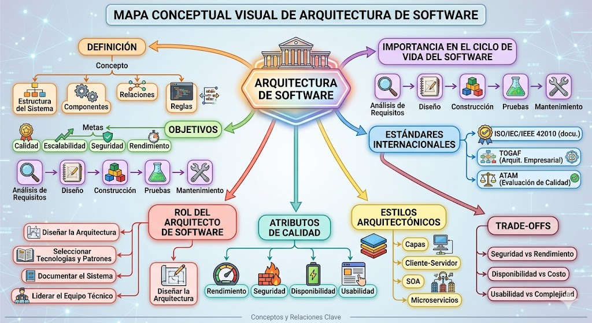
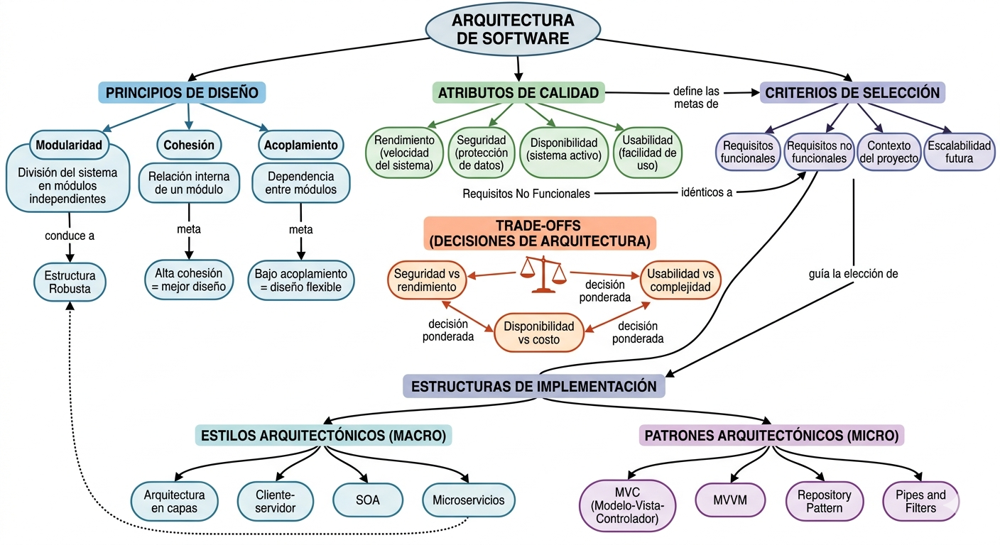

Semana 03
Diseño del Sistema (SDD)
1. Documento de Diseño del Sistema
A continuación se presenta el documento SDD (Software Design Document) elaborado durante la tercera semana. Puedes revisarlo directamente desde este visor:
2. Archivos y Entregables
Descarga los documentos correspondientes a la semana en tu formato preferido:
3. Material Visual
Mapas y diagramas elaborados como parte de las actividades de la semana:

